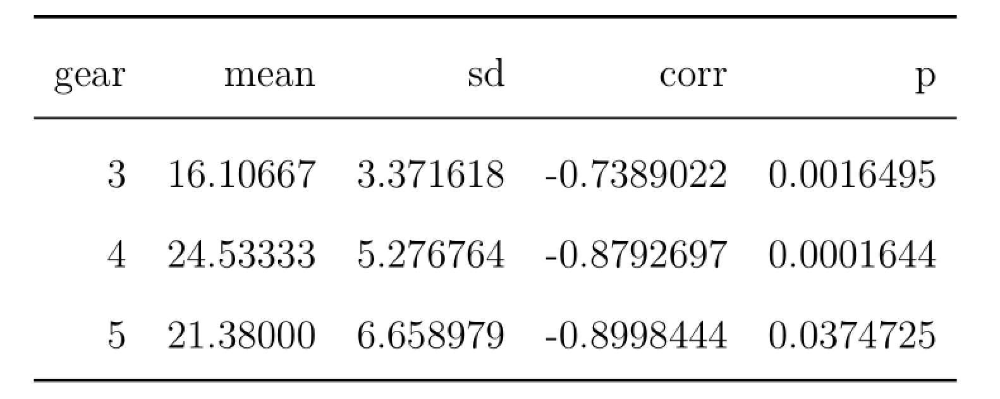
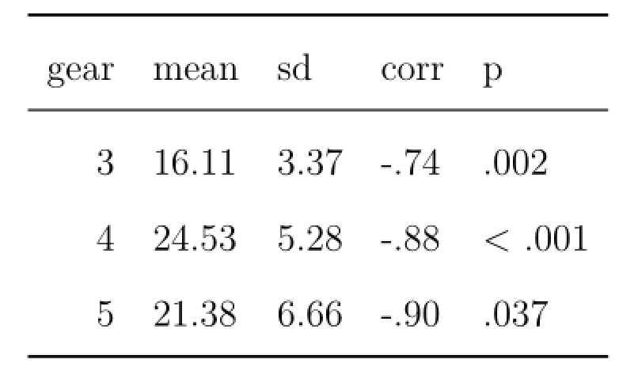
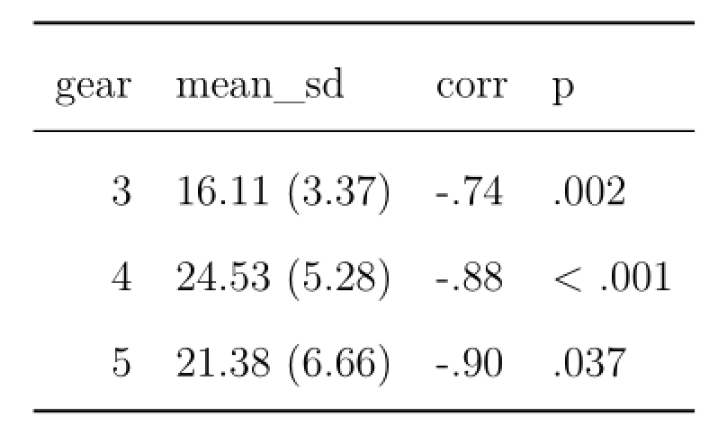
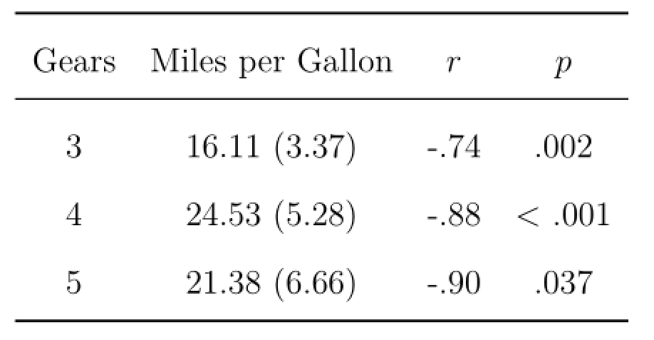
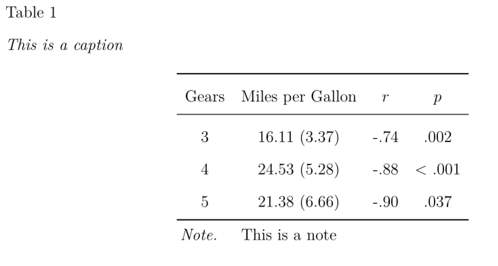
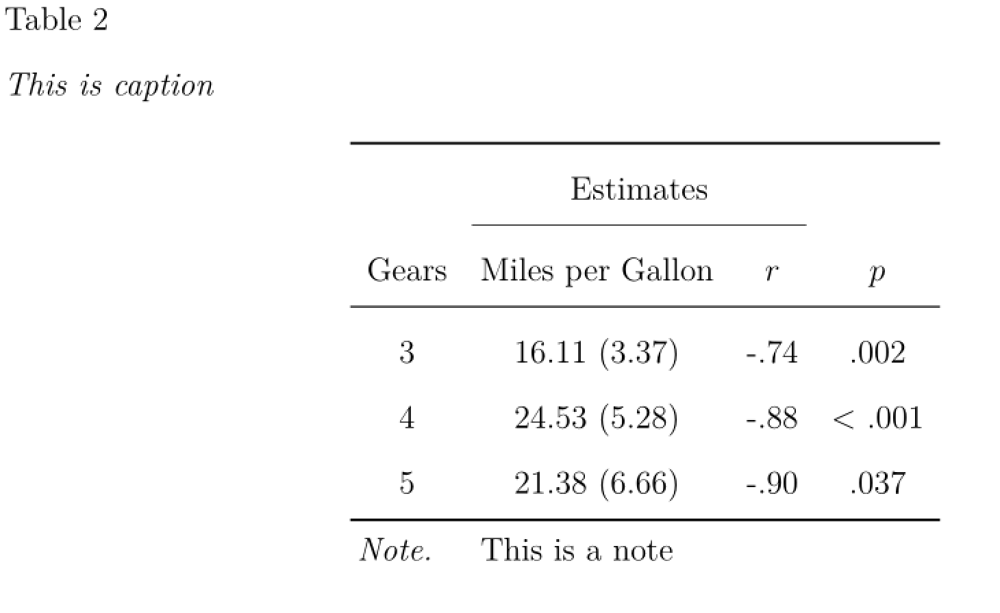
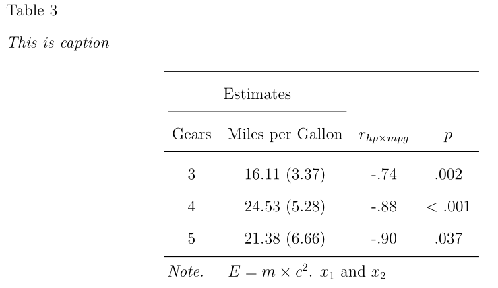
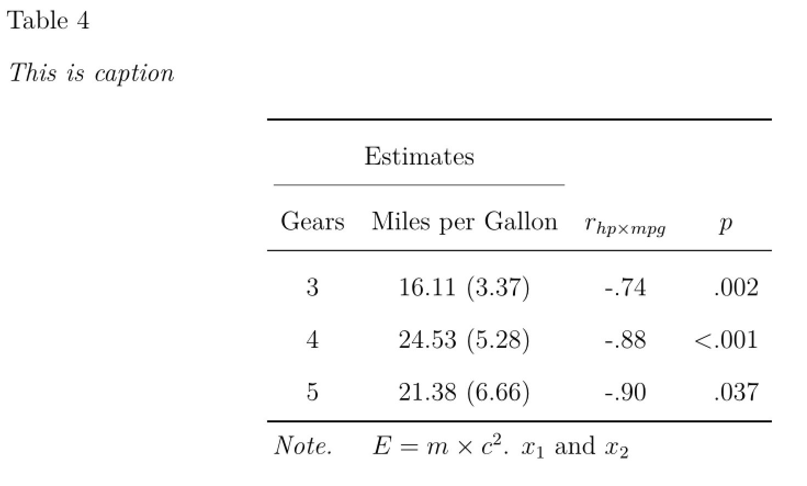

library(papaja)
library(knitr)
library(kableExtra)
library(tidyverse)In this short tutorial, I want to demonstrate how to build publication ready LaTeX tables in R with the papaja package and the kable() function. To actually see the tables you either can use the R-code directly in an RMarkdown document or copy & paste the resulting LaTeX code in your LaTeX IDE of choice.
Getting started
Before we can start, we need to install and load the packages we need for this tutorial. The papaja package can be installed directly from github, see the manual for more information.
Lets also create an example results data.frame based on the mtcars data set, which we would like to convert to a nice table ready for publication.
(temp0 <- mtcars %>%
group_by(gear) %>%
summarize(mean = mean(mpg),
sd = sd(mpg),
corr = cor.test(mpg,hp)$estimate,
p = cor.test(mpg,hp)$p.value,
.groups="keep") %>%
as.data.frame()) #for nicer printingThis data.frame temp0 now contains the mean and standard deviation of miles per gallon, the correlation of miles per gallon and horsepower, as well as the corresponding p-value, for each factor level of number of gears.
Generate LaTeX-Table
To generate the LaTeX-Code for this data.frame, we can use the kable() function:
kable(temp0,format = "latex",booktabs=TRUE)Running this line of code in R gives us the following LaTeX-Code as output,
\begin{tabular}{rrrrr}
\toprule
gear & mean & sd & corr & p\\
\midrule
3 & 16.10667 & 3.371618 & -0.7389022 & 0.0016495\\
4 & 24.53333 & 5.276764 & -0.8792697 & 0.0001644\\
5 & 21.38000 & 6.658979 & -0.8998444 & 0.0374725\\
\bottomrule
\end{tabular}which leads to this table:

Formatting the values inside the table
As a first step to improve this table, we can format the output of the values inside the table. For this we can use the functions printnum() and printp() from the papaja package. These functions format numerical values according to APA-Style. We can just wrap these functions around our variables and define specific properties of the variables. For instance with gt1=FALSE, we can indicate that the correlation variable can not have values greater than 1.
(temp1 <- temp0 %>%
mutate(mean = printnum(mean),
sd = printnum(sd),
corr = printnum(corr,gt1=FALSE),
p = printp(p)) %>%
as.data.frame())When we now use this new data.frame in kable, we get the following table [I will omit the underlying LaTeX-Code from now on, but running the code in RStudio or the Console will still print the code]:
kable(temp1 ,format = "latex",booktabs=TRUE)
This table looks already a little bit nicer than the previous one. Often we report composites of multiple descriptive statistics in one column, for instance the mean and then the standard deviation in parenthesis. We can easily implement this in R by using the paste0()
(temp2 <- temp1 %>%
mutate(mean_sd = paste0(mean," (",sd,")")) %>%
select(gear,mean_sd,corr,p) )
kable(temp2 ,format = "latex",booktabs=TRUE)
Changing the variable namens in the table
As a next step, we could change the variable names displayed in the table and also change the alignment of the columns. While you could just change the variable names of the data.frame in R, a better solution would be to use the kable() function directly. With the argument align="c" I defined that now every column is center aligned. You can also specify a different alignment for each column by supplying a vector to align=. For instance align=c("l","l","r","r","c") would make the first two columns be left aligned, the next two columns right aligned, and the last column center aligned. In addition, I changed the column names with the col.names argument. Wrapping variable names between “$$” together with escape = FALSE toggles the math-mode of LaTeX and thus makes them italic.
temp2 %>%
kable(.,format = "latex",booktabs=TRUE,
align = "c",
col.names = c("Gears","Miles per Gallon","$r$","$p$"),
escape = FALSE)
Adding table notes and captions
It is also straightforward to add captions and notes to a table, by again using the arguments of the kable()function or the footnote()function from the kableExtra package.
temp2 %>%
kable(.,format = "latex",booktabs=TRUE,
align = "c",
col.names = c("Gears","Miles per Gallon","$r$","$p$"),
escape = FALSE,
caption = "This is caption") %>%
footnote(general = "This is a note",
footnote_as_chunk = TRUE,
threeparttable = T,
escape = F,
general_title = "Note.",
title_format = c("italic"))
Adding interim-headers
To add more structure and details to your table, you can also use the add_header_above()function to add some interim-headers inside your table. For instance adding add_header_above(c(" " = 1, "Estimates" = 2)) creates an additional header over the second and third variable (i.e. the two columns after the first).
temp2 %>%
kable(.,format = "latex",booktabs=TRUE,
align = "c",
col.names = c("Gears","Miles per Gallon","$r$","$p$"),
escape = FALSE,
caption = "This is caption") %>%
footnote(general = "This is a note",
footnote_as_chunk = TRUE,
threeparttable = T,
escape = F,
general_title = "Note.",
title_format = c("italic")) %>%
add_header_above(c("Estimates" = 2))
Using additional LaTeX
It is also possible to use additional LaTeX packages and LaTeX-code in your table. For instance you can add equations and other math-options like indices. For instance, here I added an equation and some variable indexing in the note and the variable names.
temp2 %>%
kable(.,format = "latex",booktabs=TRUE,
align = "c",
col.names = c("Gears","Miles per Gallon","$r_{hp \\times mpg}$","$p$"),
escape = FALSE,
caption = "This is caption") %>%
footnote(general = "$E = m \\\\times c^{2}$. $x_1$ and $x_2$",
footnote_as_chunk = TRUE,
threeparttable = T,
escape = F,
general_title = "Note.",
title_format = c("italic")) %>%
add_header_above(c("Estimates" = 2))
In addition, by adding the following line in the YAML-header of your papaja-document, you can use the more advanced column formatting options of the siunitx LaTeX-package.
header-includes :
- \usepackage{siunitx}
- \sisetup{add-integer-zero=false}Changing the align = "c" argument to align = "ccccS[table-format=< .3]" ensures right alignemt of the p-value column which can include a special character (i.e., <) in some cases.
temp2 %>%
kable(.,format = "latex",booktabs=TRUE,
align = "cccS[table-format=< .3]",
col.names = c("Gears","Miles per Gallon","$r_{hp \\times mpg}$","$p$"),
escape = FALSE,
caption = "This is caption") %>%
footnote(general = "$E = m \\\\times c^{2}$. $x_1$ and $x_2$",
footnote_as_chunk = TRUE,
threeparttable = T,
escape = F,
general_title = "Note.",
title_format = c("italic")) %>%
add_header_above(c("Estimates" = 2))